itamaeのCIとの
格闘
2018-02-03
情報科学若手の会冬の陣2018
うなすけ
自己紹介
- 名前: うなすけ
- 株式会社バンク
- エンジニア
- twitter : @yu_suke1994
- GitHub : @unasuke
転職しました

本題の前に
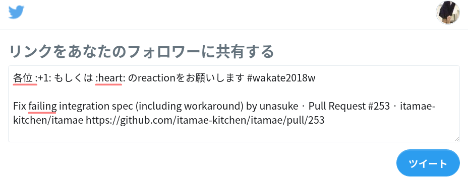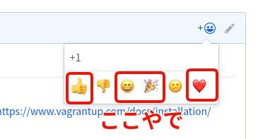https://github.com/itamae-kitchen/itamae/pull/253もくじ
- itamaeとは
- まなてぃとの出会い
- なおす
- まとめ
itamaeとは
Ruby製の構成管理ツール
類似OSSにAnsible, Chefがある
see also
まなてぃとの出会い
 福岡Ruby会議02に前夜祭＆本編スポンサーとして参加しました #fukuokark02 - pixiv inside
福岡Ruby会議02に前夜祭＆本編スポンサーとして参加しました #fukuokark02 - pixiv insideまなてぃとの出会い
そう、それは昨年11月の
福岡Ruby会議02での出来事だった……
まなてぃとの出会い
福岡Ruby会議02 懇親会での会話
まなてぃ「itamaeにPullReq出したんだけどtest passしてなくてmergeもされてないんですよ〜」
うなすけ「へぇ〜(そらCI落ちてたらmergeしてもらえんやろ)
内容はうろ覚えです
福岡Ruby会議02 懇親会での会話
確かに落ちている
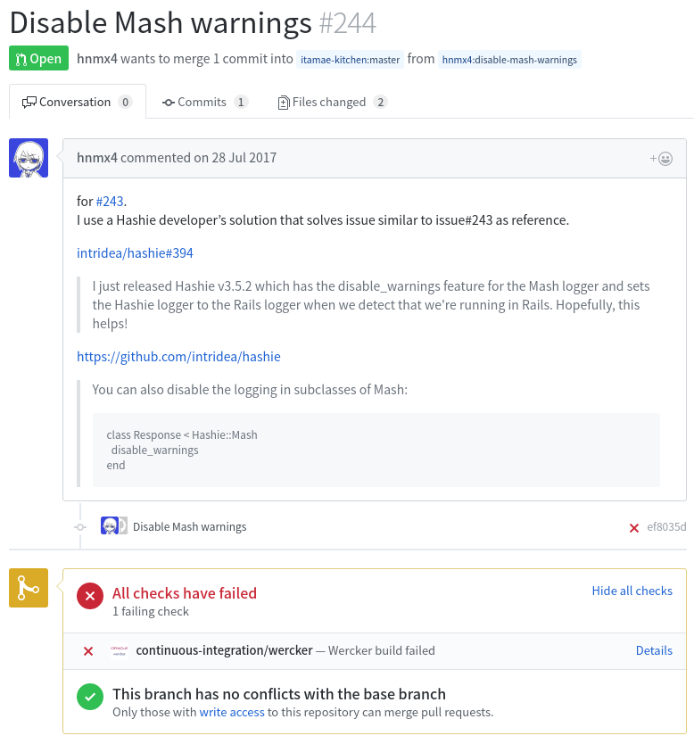その後
うなすけ「業務でitamae使おっと♪」
https://github.com/itamae-kitchen/itamae
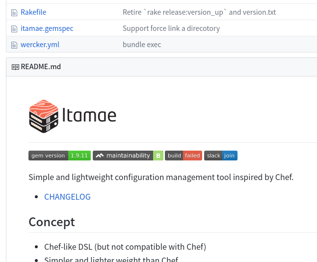そもそもmasterが落ちとるやんけ！！！！
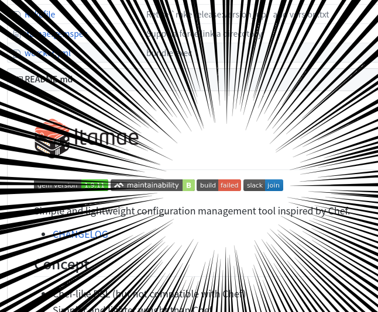masterでspecが落ちているOSSを
使いたいと思うでしょうか？？？？？
なおします
なおす
- bundle installできない
- CIの設定を書き直さざるをえない
- ubuntuが古い
- 実行ごとに落ちる場所が変わる
- なぜか落ちるspec
- 「昔は通ってたんじゃ」
かけ足でいきましょう
なおす
bundle installできない
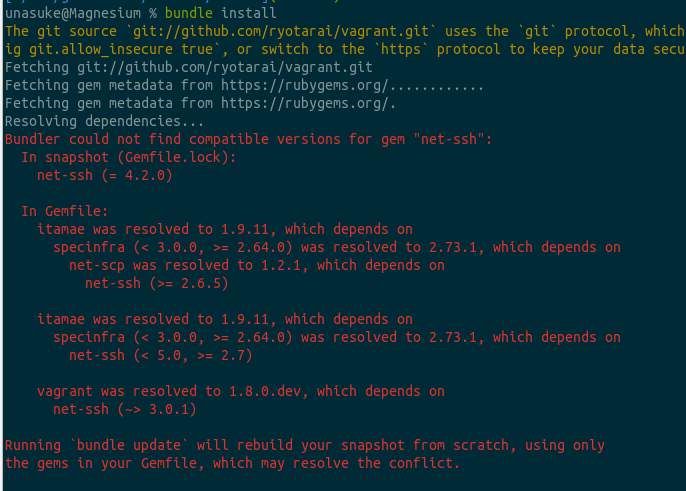なおす
bundle installできない
なぜ
なんかforkしたVagrantを使ってて
依存関係の解決に失敗
なおす
bundle installできない
forkしたVagrant
versionが1.7.4
最新は2.0.2
しかも配布形式が変わってる
なおす
CIの設定を書き直さざるをえない
Vagrantの配布方法が変わって
CI書き直さないと……
なおす
CIの設定を書き直さざるをえない
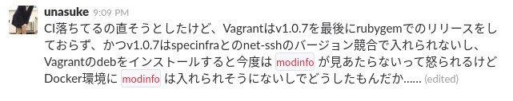なおす
CIの設定を書き直さざるをえない
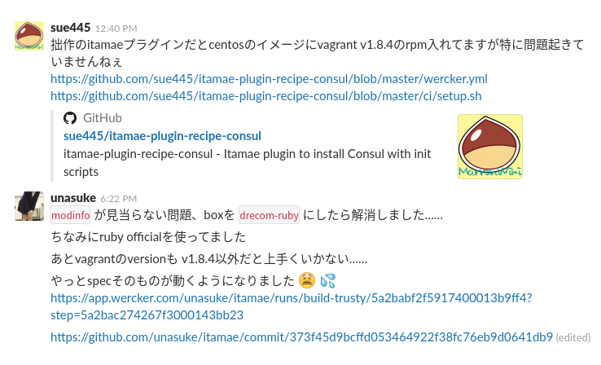sue445さんマジ感謝
なおす
ubuntuが古い
Vagrant.configure(VAGRANTFILE_API_VERSION) do |config|
config.vm.define :trusty do |c|
c.vm.hostname = 'itamae-trusty'
c.vm.provider :virtualbox do |provider, override|
override.vm.box = "ubuntu/trusty64"ubuntu trusty 14.04 LTS
2019年4月までのサポート
なおす
ubuntuが古い
trusty 14.04
Ruby 1.9
EOL Ruby!!!なおす
ubuntuが古い
trusty 14.04 → xenial 16.04
なおす
ubuntu trusty to xenial
パッケージのバージョンが変わって
specが落ちるようになった！！
sl、お前のことだぞ！
なおす
実行ごとに落ちる場所が変わる
1回目とそれ以降で落ちる箇所が変わる
→mkdirは既にdirが存在しているとエラー！
なおす
実行ごとに落ちる場所が変わる
multiple mkdir
ディレクトリの存在確認をすることにして回避
https://github.com/itamae-kitchen/itamae/pull/253/commits/9d2ef4e719f1c6025f66965c85aa00074026addeなおす
なぜか落ちるspec
sticky bitのついたファイルの編集で
net-ssh gemが例外で落ちる
なおす
なぜか落ちるspec
sticky bit
これで通るようになる
file '/tmp/file_edit_with_suid' do
- action :edit
owner 'itamae2'
group 'itamae2'なんで？？？？
なおす
「昔は通ってたんじゃ」
ubuntuをtrustyからxenialにした
↓
initがUpstartからsystemdになった
もう、おわかりですね？
なおす
「昔は通ってたんじゃ」
rcスクリプト直接見てるspecが落ちる！
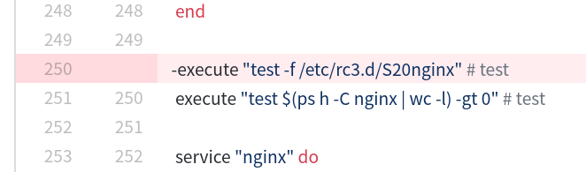なんでそんなのあるんだ
まるっと消しました
なおす
紆余曲折あり……
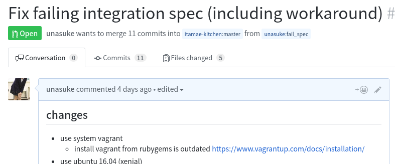2ヶ月かかりました
なおす
紆余曲折あり……落ちる。
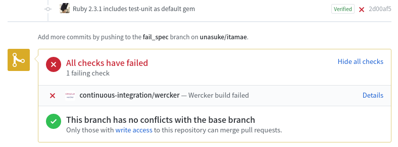しゃあないやんけwercker pipeline変更したんやから